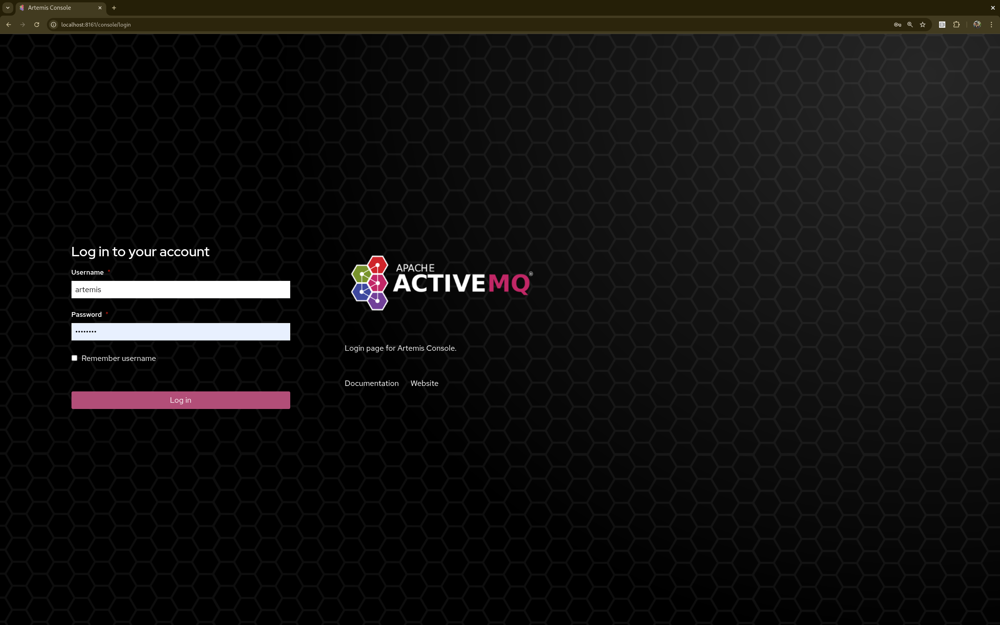

Apache Artemis ships by default with a management console powered by Hawt.io.
1. Security
The management console communicates with the broker via HTTP(S). The broker uses the Jolokia JMX-HTTP bridge to convert the contents of these HTTP requests into a JMX operations and then returns the results.
Security for Jolokia is configured via etc/jolokia-access.xml.
You can read more about the contents of this file in the Jolokia Security Guide.
By default the console is locked down to localhost.
Pay particular attention to the <cors> restrictions when exposing the console web endpoint over the network.
|
Any request with an |
Problems with Jolokia security are often observed as the ability to login to the console, but the console is blank.
1.1. Logging In
To access the management console, use a browser and go to the URL http://localhost:8161/console.
A login screen will be presented. If your broker is secured, you will need to use a user with admin role. If it is unsecured, enter any user/password.

Once logged in check out the Artemis Console documentation for details on how to use the console.
2. Status Logging
When the broker starts it will detect the presence of the web console and log status information, e.g.:
INFO [org.apache.activemq.artemis] AMQ241002: Artemis Jolokia REST API available at http://localhost:8161/console/jolokia INFO [org.apache.activemq.artemis] AMQ241004: Artemis Console available at http://localhost:8161/console
The web console is detected by inspecting the value of the <display-name> tag in the war file’s WEB-INF/web.xml descriptor.
By default it looks for hawtio.
However, if this value is changed for any reason the broker can look for this new value by setting the following system property
-Dorg.apache.activemq.artemis.webConsoleDisplayName=newValue